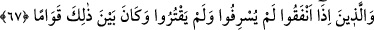
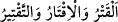
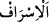
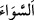

dönüşü olmayan bir îmân, tükenmeyen bir nimet, ebedî bir göz aydınlığı ve
Peygamberin Muhammed (s.a.)’le (cennette) beraberlik diliyorum. Allah’ım!
Yüzlerimize katından bir hayâ örtüsü ört, kalblerimizi senden bir ferahla doldur,
nefislerimize azametini yerleştir, âzâlarımızı sana kulluk ve hizmette boyun
eğdir/itâat ettir. Bize kendini senden başka her şeyden daha sevgili kıl. Allah’ım! Bize
zâtına yaraşır şekilde muâmele et, bize lâyık olana göre bize muâmele etme.
Allah’ım! Beni, annemi-babamı, beni dünyaya getirenleri mağfiret et. Onlar beni
küçük iken merhametle yetiştirip büyüttükleri gibi sen de onlara merhamet et.
Amcalarımızı, halalarımızı, dayılarımızı, teyzelerimizi, zevcelerimizi ve nesillerimizi,
bütün mü’min erkek ve kadınları, yaşayanlarını ve ölenlerini bağışla. Ey merhamet
edenlerin en merhametlisi ve bağışlayanların en hayırlısı!…”[256]
Bu duâdan başka İmam Mekkî’nin Kûtü’l-kulûb’undan naklen Avârifü’l-maârif’te
zikredilen diğer duâlar da yapılabilir.
67. (O kullar), harcadıklarında ne israf ne de cimrilik ederler; ikisi arasında orta
bir yol tutarlar.
“(O kullar), harcadıklarında ne israf ne de cimrilik ederler;” cömertlik sınırını
aşmazlar ve cimri kimsenin kıstığı gibi kısıp daraltmazlar.
“ bir şey gitmek, bitmek ve tükenmek demektir. Bu ya satmakla ya ölümle
veya yok olup sona ermekle olur. “ israfın zıddı olan kısmak/daraltmak
demektir. “ ise harcamada haddi aşmaktır.
İnfak/harcama konusunda “ikisi” zikredilen israf ve cimrilik “arasında orta” dengeli
ve mutedil “bir yol tutarlar.”
“Orta bir yol” denilmesi, israf ile cimrilik arasında ortada bir yerde bulunduğu için
kendisine nisbetle iki tarafın, biri diğerine tercih edilemeyecek şekilde doğru ve îtidal
üzere olmasından dolayıdır. Tıpkı dâirenin merkezi gibi. Çünkü dâirenin tamamının
merkeze uzaklığı eşittir. Bu kelimenin benzeri, bir şeyin iki tarafı birbirine eşit olduğu
zaman kullanılan “ kelimesidir.
Bu âyet, İsrâ sûresindeki şu âyetin benzeridir: “Eli sıkı olma; büsbütün eli açık da
olma. Sonra kınanır, (kaybettiklerinin) hasretini çeker durursun.” (el-İsrâ, 17/29)
Orta yolu sakın elden bırakma,
Çünkü işlerin en hayırlısı orta yolda olandır
Konunun mâhiyeti incelendiği zaman şöyledir: İnfak, övülen ve yerilen olarak iki